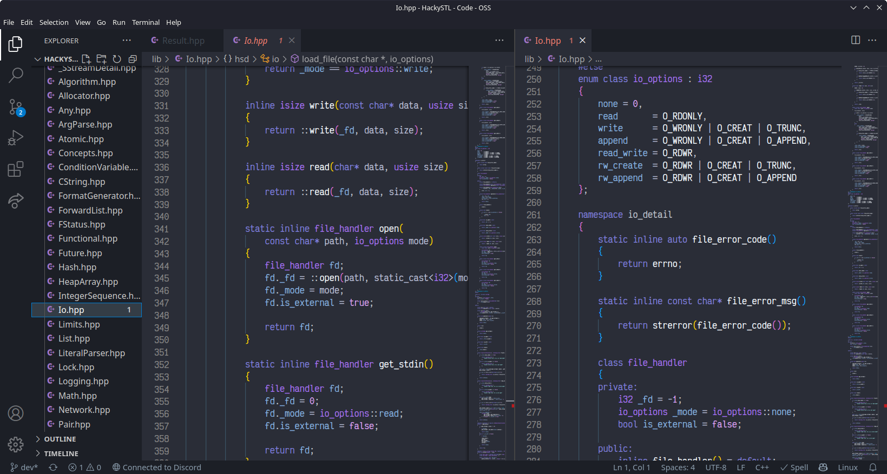

Io Overhaul
Redoing the file handlers, May 14, 2022
So, what happened:
I was thinking about the way I've implemented file IO in the past and
considering this is not the first time I had to redo the entire thing,
it struck me that I should probably start from scratch as I heavily
relied on the C implementation of IO, which is not slow compared to
std::fstream and std::ifstream,
but I knew that I can make it faster, seeing how libfmt
performs, and emphasis on the user to control the buffer size, so I've dome that.
The first thing I had to do is to give the ability to the user to get the underlying stream from the file object. Here's the code for that:
return *this;, what? That's right, I'm returning the
*this pointer, which is the file object itself.
This is the way I can get the underlying stream from the file object.
But why have you inherited from stream?
The answer is, I don't know. It made sense to me when I was implementing it.
Now that the user can access the properties of the underlying
stream and essentially screw themselves this means we have to
modify the way output and input works. The traditionally
.print() method is now printing
into the stream rather than the file. So, in order to do that
you have to call the .flush()
method as well. .print() is
implemented as such:
Again, snprintf? Why is that even there if
you said you are going to replace C IO functions? Well, guess what? Implementing
IO for buffers is very complicated, even more if you want to do floating point numbers,
so I'm instead to use C's buffer IO functions for that which are very fast, the only
bottleneck are actually the files themselves. File descriptors are very slow to manipulate.
And the .flush() method is implemented as such:
The .read() is also implemented differently:
And I went to implement the file handlers for unix and windows, fun fact: windows also supports file descriptors, but I went full on and implemented a windows specific file handler.
UNIX:
And Windows: